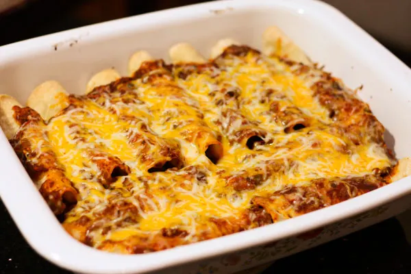

Beef Enchiladas

Ingredients
- 1 medium onion, finely chopped
- 2 jalapenos, seeded and finely chopped
- 3 cloves garlic, minced
- 3 tbsp chili powder
- 2 tsp ground cumin
- 3 tsp sugar
- 1x 15 oz can tomato sauce
- 1 cup water
- 1 large tomato
- 1 lb lean ground beef
- 1 cup extra sharp white cheddar cheese, shredded
- 1 cup monterey jack cheese, shredded
- 12x 6-inch soft corn tortillas
- cooking spray
- salt and pepper to taste
Instructions
- Preheat oven to 425 °F. Grease a 9x13 casserole dish.
- In a large skillet, saute the onions and jalapenos until softened. Then
stir in the garlic, chili powder, cumin, and sugar. Cook until fragrant,
then stir in the water, sauce, and tomato. Bring to a simmer and cook until
slightly thickened, about 5-7 minutes.
- Meanwhile, cook the ground beef in another skillet until no pink remains.
Drain and set aside.
- Once the sauce is done, season with salt and pepper to taste. Remove from
heat. Take about 1/2 of the red sauce and mix it in with the beef.
- Stack your tortillas and pop them in the microwave for about 40 seconds
to warm them up and get them pliable.
- When ready to work with them, place them on a flat surface, take the tortilla
and in the middle, sprinkle a mixture of the two cheeses. Then add red
sauce and beef mixture on top. Tightly roll each tortilla and
lay them seam down in the prepared casserole dish. Repeat until all
the ingredients have been used up and the casserole dish is full.
- Take the cooking spray and spray the tops of the enchiladas. Place
in the oven, uncovered, for 7 minutes, or until the tops of the
enchiladas start to brown.
- Reduce oven temperatures to 400 °F and take out
the casserole dish. Pour the remaining red sauce you reserved evenly on
top and top with the shredded cheese. Cover with foil and bake for
and additional 20 minutes, or until heated through.
- Remove the foil and let bake uncovered for another 5 minutes
to brown the cheese.
- Remove from oven and let sit for 10 minutes before serving.
- Serve with whatever sides and toppings you like.